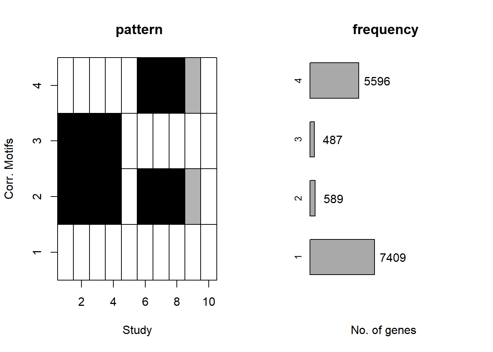
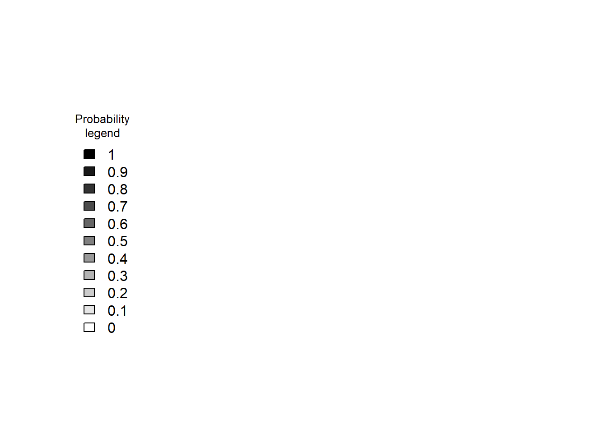

Figure 5: TOP2i induce a time-dependent gene expression response in cardiomyocytes.
ERM
2023-09-27
Last updated: 2023-09-27
Checks: 7 0
Knit directory: Cardiotoxicity/
This reproducible R Markdown analysis was created with workflowr (version 1.7.1). The Checks tab describes the reproducibility checks that were applied when the results were created. The Past versions tab lists the development history.
Great! Since the R Markdown file has been committed to the Git repository, you know the exact version of the code that produced these results.
Great job! The global environment was empty. Objects defined in the global environment can affect the analysis in your R Markdown file in unknown ways. For reproduciblity it’s best to always run the code in an empty environment.
The command set.seed(20230109) was run prior to running
the code in the R Markdown file. Setting a seed ensures that any results
that rely on randomness, e.g. subsampling or permutations, are
reproducible.
Great job! Recording the operating system, R version, and package versions is critical for reproducibility.
Nice! There were no cached chunks for this analysis, so you can be confident that you successfully produced the results during this run.
Great job! Using relative paths to the files within your workflowr project makes it easier to run your code on other machines.
Great! You are using Git for version control. Tracking code development and connecting the code version to the results is critical for reproducibility.
The results in this page were generated with repository version 6b78917. See the Past versions tab to see a history of the changes made to the R Markdown and HTML files.
Note that you need to be careful to ensure that all relevant files for
the analysis have been committed to Git prior to generating the results
(you can use wflow_publish or
wflow_git_commit). workflowr only checks the R Markdown
file, but you know if there are other scripts or data files that it
depends on. Below is the status of the Git repository when the results
were generated:
Ignored files:
Ignored: .RData
Ignored: .Rhistory
Ignored: .Rproj.user/
Ignored: data/41588_2018_171_MOESM3_ESMeQTL_ST2_for paper.csv
Ignored: data/Arr_GWAS.txt
Ignored: data/Arr_geneset.RDS
Ignored: data/BC_cell_lines.csv
Ignored: data/BurridgeDOXTOX.RDS
Ignored: data/CADGWASgene_table.csv
Ignored: data/CAD_geneset.RDS
Ignored: data/CALIMA_Data/
Ignored: data/Clamp_Summary.csv
Ignored: data/Cormotif_24_k1-5_raw.RDS
Ignored: data/Counts_RNA_ERMatthews.txt
Ignored: data/DAgostres24.RDS
Ignored: data/DAtable1.csv
Ignored: data/DDEMresp_list.csv
Ignored: data/DDE_reQTL.txt
Ignored: data/DDEresp_list.csv
Ignored: data/DEG-GO/
Ignored: data/DEG_cormotif.RDS
Ignored: data/DF_Plate_Peak.csv
Ignored: data/DRC48hoursdata.csv
Ignored: data/Da24counts.txt
Ignored: data/Dx24counts.txt
Ignored: data/Dx_reQTL_specific.txt
Ignored: data/EPIstorelist24.RDS
Ignored: data/Ep24counts.txt
Ignored: data/Full_LD_rep.csv
Ignored: data/GOIsig.csv
Ignored: data/GOplots.R
Ignored: data/GTEX_setsimple.csv
Ignored: data/GTEX_sig24.RDS
Ignored: data/GTEx_gene_list.csv
Ignored: data/HFGWASgene_table.csv
Ignored: data/HF_geneset.RDS
Ignored: data/Heart_Left_Ventricle.v8.egenes.txt
Ignored: data/Heatmap_mat.RDS
Ignored: data/Heatmap_sig.RDS
Ignored: data/Hf_GWAS.txt
Ignored: data/K_cluster
Ignored: data/K_cluster_kisthree.csv
Ignored: data/K_cluster_kistwo.csv
Ignored: data/LD50_05via.csv
Ignored: data/LDH48hoursdata.csv
Ignored: data/Mt24counts.txt
Ignored: data/NoRespDEG_final.csv
Ignored: data/RINsamplelist.txt
Ignored: data/Seonane2019supp1.txt
Ignored: data/TMMnormed_x.RDS
Ignored: data/TOP2Bi-24hoursGO_analysis.csv
Ignored: data/TR24counts.txt
Ignored: data/TableS10.csv
Ignored: data/TableS11.csv
Ignored: data/TableS9.csv
Ignored: data/Top2biresp_cluster24h.csv
Ignored: data/Var_test_list.RDS
Ignored: data/Var_test_list24.RDS
Ignored: data/Var_test_list24alt.RDS
Ignored: data/Var_test_list3.RDS
Ignored: data/Vargenes.RDS
Ignored: data/Viabilitylistfull.csv
Ignored: data/allexpressedgenes.txt
Ignored: data/allfinal3hour.RDS
Ignored: data/allgenes.txt
Ignored: data/allmatrix.RDS
Ignored: data/allmymatrix.RDS
Ignored: data/annotation_data_frame.RDS
Ignored: data/averageviabilitytable.RDS
Ignored: data/avgLD50.RDS
Ignored: data/avg_LD50.RDS
Ignored: data/backGL.txt
Ignored: data/burr_genes.RDS
Ignored: data/calcium_data.RDS
Ignored: data/clamp_summary.RDS
Ignored: data/cormotif_3hk1-8.RDS
Ignored: data/cormotif_initalK5.RDS
Ignored: data/cormotif_initialK5.RDS
Ignored: data/cormotif_initialall.RDS
Ignored: data/cormotifprobs.csv
Ignored: data/counts24hours.RDS
Ignored: data/cpmcount.RDS
Ignored: data/cpmnorm_counts.csv
Ignored: data/crispr_genes.csv
Ignored: data/ctnnt_results.txt
Ignored: data/cvd_GWAS.txt
Ignored: data/dat_cpm.RDS
Ignored: data/data_outline.txt
Ignored: data/drug_noveh1.csv
Ignored: data/efit2.RDS
Ignored: data/efit2_final.RDS
Ignored: data/efit2results.RDS
Ignored: data/ensembl_backup.RDS
Ignored: data/ensgtotal.txt
Ignored: data/filcpm_counts.RDS
Ignored: data/filenameonly.txt
Ignored: data/filtered_cpm_counts.csv
Ignored: data/filtered_raw_counts.csv
Ignored: data/filtermatrix_x.RDS
Ignored: data/folder_05top/
Ignored: data/geneDoxonlyQTL.csv
Ignored: data/gene_corr_df.RDS
Ignored: data/gene_corr_frame.RDS
Ignored: data/gene_prob_tran3h.RDS
Ignored: data/gene_probabilityk5.RDS
Ignored: data/geneset_24.RDS
Ignored: data/gostresTop2bi_ER.RDS
Ignored: data/gostresTop2bi_LR
Ignored: data/gostresTop2bi_LR.RDS
Ignored: data/gostresTop2bi_TI.RDS
Ignored: data/gostrescoNR
Ignored: data/gtex/
Ignored: data/heartgenes.csv
Ignored: data/hsa_kegg_anno.RDS
Ignored: data/individualDRCfile.RDS
Ignored: data/individual_DRC48.RDS
Ignored: data/individual_LDH48.RDS
Ignored: data/indv_noveh1.csv
Ignored: data/kegglistDEG.RDS
Ignored: data/kegglistDEG24.RDS
Ignored: data/kegglistDEG3.RDS
Ignored: data/knowfig4.csv
Ignored: data/knowfig5.csv
Ignored: data/label_list.RDS
Ignored: data/ld50_table.csv
Ignored: data/mean_vardrug1.csv
Ignored: data/mean_varframe.csv
Ignored: data/mymatrix.RDS
Ignored: data/new_ld50avg.RDS
Ignored: data/nonresponse_cluster24h.csv
Ignored: data/norm_LDH.csv
Ignored: data/norm_counts.csv
Ignored: data/old_sets/
Ignored: data/organized_drugframe.csv
Ignored: data/plan2plot.png
Ignored: data/plot_intv_list.RDS
Ignored: data/plot_list_DRC.RDS
Ignored: data/qval24hr.RDS
Ignored: data/qval3hr.RDS
Ignored: data/qvalueEPItemp.RDS
Ignored: data/raw_counts.csv
Ignored: data/response_cluster24h.csv
Ignored: data/sigVDA24.txt
Ignored: data/sigVDA3.txt
Ignored: data/sigVDX24.txt
Ignored: data/sigVDX3.txt
Ignored: data/sigVEP24.txt
Ignored: data/sigVEP3.txt
Ignored: data/sigVMT24.txt
Ignored: data/sigVMT3.txt
Ignored: data/sigVTR24.txt
Ignored: data/sigVTR3.txt
Ignored: data/siglist.RDS
Ignored: data/siglist_final.RDS
Ignored: data/siglist_old.RDS
Ignored: data/slope_table.csv
Ignored: data/supp10_24hlist.RDS
Ignored: data/supp10_3hlist.RDS
Ignored: data/supp_normLDH48.RDS
Ignored: data/supp_pca_all_anno.RDS
Ignored: data/table3a.omar
Ignored: data/testlist.txt
Ignored: data/toplistall.RDS
Ignored: data/trtonly_24h_genes.RDS
Ignored: data/trtonly_3h_genes.RDS
Ignored: data/tvl24hour.txt
Ignored: data/tvl24hourw.txt
Ignored: data/venn_code.R
Ignored: data/viability.RDS
Untracked files:
Untracked: .RDataTmp
Untracked: .RDataTmp1
Untracked: .RDataTmp2
Untracked: .RDataTmp3
Untracked: 3hr all.pdf
Untracked: Code_files_list.csv
Untracked: Data_files_list.csv
Untracked: Doxorubicin_vehicle_3_24.csv
Untracked: Doxtoplist.csv
Untracked: EPIqvalue_analysis.Rmd
Untracked: GWAS_list_of_interest.xlsx
Untracked: KEGGpathwaylist.R
Untracked: OmicNavigator_learn.R
Untracked: SigDoxtoplist.csv
Untracked: analysis/ciFIT.R
Untracked: analysis/export_to_excel.R
Untracked: cleanupfiles_script.R
Untracked: code/biomart_gene_names.R
Untracked: code/constantcode.R
Untracked: code/corMotifcustom.R
Untracked: code/cpm_boxplot.R
Untracked: code/extracting_ggplot_data.R
Untracked: code/movingfilesto_ppl.R
Untracked: code/pearson_extract_func.R
Untracked: code/pearson_tox_extract.R
Untracked: code/plot1C.fun.R
Untracked: code/spearman_extract_func.R
Untracked: code/venndiagramcolor_control.R
Untracked: cormotif_p.post.list_4.csv
Untracked: figS1024h.pdf
Untracked: individual-legenddark2.png
Untracked: installed_old.rda
Untracked: motif_ER.txt
Untracked: motif_LR.txt
Untracked: motif_NR.txt
Untracked: motif_TI.txt
Untracked: output/DNR_DEGlist.csv
Untracked: output/DNRvenn.RDS
Untracked: output/DOX_DEGlist.csv
Untracked: output/DOXvenn.RDS
Untracked: output/EPI_DEGlist.csv
Untracked: output/EPIvenn.RDS
Untracked: output/Figures/
Untracked: output/MTX_DEGlist.csv
Untracked: output/MTXvenn.RDS
Untracked: output/TRZ_DEGlist.csv
Untracked: output/TableS8.csv
Untracked: output/Volcanoplot_10
Untracked: output/Volcanoplot_10.RDS
Untracked: output/allfinal_sup10.RDS
Untracked: output/cormotif_probability_genelist.csv
Untracked: output/endocytosisgenes.csv
Untracked: output/gene_corr_fig9.RDS
Untracked: output/legend_b.RDS
Untracked: output/motif_ERrep.RDS
Untracked: output/motif_LRrep.RDS
Untracked: output/motif_NRrep.RDS
Untracked: output/motif_TI_rep.RDS
Untracked: output/output-old/
Untracked: output/rank24genes.csv
Untracked: output/rank3genes.csv
Untracked: output/reneem@ls6.tacc.utexas.edu
Untracked: output/sequencinginformationforsupp.csv
Untracked: output/sequencinginformationforsupp.prn
Untracked: output/sigVDA24.txt
Untracked: output/sigVDA3.txt
Untracked: output/sigVDX24.txt
Untracked: output/sigVDX3.txt
Untracked: output/sigVEP24.txt
Untracked: output/sigVEP3.txt
Untracked: output/sigVMT24.txt
Untracked: output/sigVMT3.txt
Untracked: output/sigVTR24.txt
Untracked: output/sigVTR3.txt
Untracked: output/supplementary_motif_list_GO.RDS
Untracked: output/toptablebydrug.RDS
Untracked: output/tvl24hour.txt
Untracked: output/x_counts.RDS
Untracked: reneebasecode.R
Unstaged changes:
Modified: analysis/Cormotifcluster_analysis.Rmd
Modified: analysis/GOI_plots.Rmd
Modified: analysis/Knowles2019.Rmd
Modified: analysis/Supplementary_figures.Rmd
Modified: analysis/run_all_analysis.Rmd
Modified: analysis/variance_scrip.Rmd
Modified: output/TNNI_LDH_RNAnormlist.txt
Modified: output/daplot.RDS
Modified: output/dxplot.RDS
Modified: output/epplot.RDS
Modified: output/mtplot.RDS
Modified: output/plan2plot.png
Modified: output/sequencing_info.txt
Modified: output/toplistall.csv
Modified: output/trplot.RDS
Modified: output/veplot.RDS
Note that any generated files, e.g. HTML, png, CSS, etc., are not included in this status report because it is ok for generated content to have uncommitted changes.
These are the previous versions of the repository in which changes were
made to the R Markdown (analysis/Figure5.Rmd) and HTML
(docs/Figure5.html) files. If you’ve configured a remote
Git repository (see ?wflow_git_remote), click on the
hyperlinks in the table below to view the files as they were in that
past version.
| File | Version | Author | Date | Message |
|---|---|---|---|---|
| Rmd | 6b78917 | reneeisnowhere | 2023-09-27 | updates and adding code |
| html | 1e11a44 | reneeisnowhere | 2023-07-30 | Build site. |
| Rmd | 2c9b724 | reneeisnowhere | 2023-07-30 | test |
| html | 4bb0b80 | reneeisnowhere | 2023-07-28 | Build site. |
| Rmd | 974fcde | reneeisnowhere | 2023-07-28 | new figures update |
| html | c40aced | reneeisnowhere | 2023-07-26 | Build site. |
| Rmd | 58c7965 | reneeisnowhere | 2023-07-26 | updating figures |
| html | ed18a48 | reneeisnowhere | 2023-07-07 | Build site. |
| Rmd | 63d054a | reneeisnowhere | 2023-07-07 | Various changes to graphs. pending Monday-renames |
| html | 0e3d22d | reneeisnowhere | 2023-07-06 | Build site. |
| Rmd | 6a6c9af | reneeisnowhere | 2023-07-06 | adding fig 5 and changing fig9 heatmap |
| Rmd | a95c83e | reneeisnowhere | 2023-07-06 | update code |
| html | 8f66a2d | reneeisnowhere | 2023-06-29 | Build site. |
| Rmd | 060305d | reneeisnowhere | 2023-06-29 | update in data |
| html | f77112b | reneeisnowhere | 2023-06-27 | Build site. |
| Rmd | ceea93e | reneeisnowhere | 2023-06-27 | adding fig 5 |
library(car)
library(tidyverse)
library(tinytex)
library(BiocGenerics)
library(data.table)
library(Cormotif)
library(cowplot)
library(ggsignif)
library(RColorBrewer)
library(broom)toplistall <- readRDS("data/toplistall.RDS")
siglist <- readRDS("data/siglist_final.RDS")
list2env(siglist, envir = .GlobalEnv)<environment: R_GlobalEnv>cpmcounts <- readRDS("data/cpmcount.RDS")
cormotif_initial <- readRDS("data/cormotif_initialall.RDS")
DEG_cormotif <- readRDS("data/DEG_cormotif.RDS")
list2env(DEG_cormotif,envir=.GlobalEnv)<environment: R_GlobalEnv>drug_pal_fact <- c("#8B006D" ,"#DF707E", "#F1B72B" ,"#3386DD", "#707031","#41B333")Figure 5: TOP2i induce a time-dependent gene expression response in cardiomyocytes.
A. Cormotif plot unedited
myColors <- rev(c("#FFFFFF", "#E6E6E6" ,"#CCCCCC", "#B3B3B3", "#999999", "#808080", "#666666","#4C4C4C", "#333333", "#191919","#000000"))
plotMotif(cormotif_initial)
plot.new()
legend('bottomleft',fill=myColors, legend =rev(c("0", "0.1", "0.2", "0.3", "0.4", "0.5", "0.6", "0.7", "0.8","0.9", "1")), box.col="white",title = "Probability\nlegend", horiz=FALSE,title.cex=.8)
More information about the Cormotif analysis can be found here.
B. Pie chart of motifs
Set <-
c("Early Acute Response",
"Early Sustained Response",
"Late Response",
"No Response")
gene_num <- c(487, 589, 5596, 7409)
fills <- c("#F8766D", "#00BFC4", "#7CAE00", "#C77CFF")
pie_chartdata <- data.frame(Set, gene_num, fills)
pie_chartdata <- pie_chartdata %>%
mutate(prop = gene_num / sum(pie_chartdata$gene_num) * 100) %>%
mutate(ypos = (prop) + 0.5 * prop)
pie_chartdata %>%
ggplot(., aes(x = "", y = gene_num, fill = Set)) +
geom_col(width = 1) +
coord_polar("y", pi / 2) +
theme_void() +
ggtitle("Distribution of genes in each motif") +
geom_text(aes(label = paste0(Set, " (", gene_num, ")")),
position = position_stack(vjust = .55)) +
theme(legend.position = "none") +
theme(plot.title = element_text(size = rel(1.5), hjust = 0.5))
C. Average absolute value of LFC by motif
lfc_nums <- readRDS("data/toplistall.RDS")
mean_lfc <- lfc_nums %>%
mutate(ER = if_else(ENTREZID %in% motif_ER, "y", "no")) %>%
mutate(LR = if_else(ENTREZID %in% motif_LR, "y", "no")) %>%
mutate(TI = if_else(ENTREZID %in% motif_TI, "y", "no")) %>%
mutate(NR = if_else(ENTREZID %in% motif_NR, "y", "no")) %>%
mutate(id = as.factor(id)) %>%
mutate(time = factor(
time,
levels = c("3_hours", "24_hours"),
labels = c("3", "24")
)) %>%
group_by(id, time) %>%
mutate(absFC = abs(logFC)) %>%
dplyr::select(id, time, absFC, ER, TI, LR, NR) %>%
dplyr::summarize(
ERm = mean(absFC[ER == "y"]),
TIm = mean(absFC[TI == "y"]),
LRm = mean(absFC[LR == "y"]),
NRm = mean(absFC[NR == "y"])
) %>%
as.data.frame()
mean_lfc %>%
ungroup() %>%
mutate(id = factor(id,
levels = c('DOX', 'EPI', 'DNR', 'MTX', 'TRZ', 'VEH'))) %>%
pivot_longer(!c(id, time), names_to = "Motif",
values_to = "meanLFC") %>%
mutate(
Set = case_match(
Motif,
"ERm" ~ "Early Acute Response",
"TIm" ~ "Early Sustained Response",
"LRm" ~ "Late Response",
"NRm" ~ "No Response",
.default = Motif
)
) %>%
ggplot(., aes(
x = time,
y = meanLFC,
col = id,
group = id
)) +
geom_point(size = 2) +
geom_line(size = 2) +
ggpubr::fill_palette(drug_pal_fact) +
# guides(fill=guide_legend(title = "Treatment"))+
facet_wrap( ~ Set, nrow = 1) +
theme_bw() +
xlab("Time (hours)") +
scale_color_manual(values = drug_pal_fact) +
ylab(" Avg. |Log Fold Change|") +
theme_bw() +
# ggtitle(" average |Log Fold| for genes across treatment each motif")+
theme(
plot.title = element_text(size = rel(1.0), hjust = 0.5),
axis.title = element_text(size = 15, color = "black"),
axis.line = element_line(linewidth = 1.5),
strip.background = element_rect(fill = "transparent"),
axis.text = element_text(
size = 10,
color = "black",
angle = 0
),
strip.text.x = element_text(
size = 11,
color = "black",
face = "bold"
)
)
sessionInfo()R version 4.3.1 (2023-06-16 ucrt)
Platform: x86_64-w64-mingw32/x64 (64-bit)
Running under: Windows 10 x64 (build 19045)
Matrix products: default
locale:
[1] LC_COLLATE=English_United States.utf8
[2] LC_CTYPE=English_United States.utf8
[3] LC_MONETARY=English_United States.utf8
[4] LC_NUMERIC=C
[5] LC_TIME=English_United States.utf8
time zone: America/Chicago
tzcode source: internal
attached base packages:
[1] stats graphics grDevices utils datasets methods base
other attached packages:
[1] broom_1.0.5 RColorBrewer_1.1-3 ggsignif_0.6.4
[4] cowplot_1.1.1 Cormotif_1.46.0 limma_3.56.2
[7] affy_1.78.2 Biobase_2.60.0 data.table_1.14.8
[10] BiocGenerics_0.46.0 tinytex_0.46 lubridate_1.9.2
[13] forcats_1.0.0 stringr_1.5.0 dplyr_1.1.3
[16] purrr_1.0.2 readr_2.1.4 tidyr_1.3.0
[19] tibble_3.2.1 ggplot2_3.4.3 tidyverse_2.0.0
[22] car_3.1-2 carData_3.0-5 workflowr_1.7.1
loaded via a namespace (and not attached):
[1] gtable_0.3.4 xfun_0.40 bslib_0.5.1
[4] rstatix_0.7.2 processx_3.8.2 callr_3.7.3
[7] tzdb_0.4.0 vctrs_0.6.3 tools_4.3.1
[10] ps_1.7.5 generics_0.1.3 fansi_1.0.4
[13] pkgconfig_2.0.3 lifecycle_1.0.3 farver_2.1.1
[16] compiler_4.3.1 git2r_0.32.0 munsell_0.5.0
[19] getPass_0.2-2 httpuv_1.6.11 htmltools_0.5.6
[22] sass_0.4.7 yaml_2.3.7 preprocessCore_1.62.1
[25] ggpubr_0.6.0 later_1.3.1 pillar_1.9.0
[28] jquerylib_0.1.4 whisker_0.4.1 cachem_1.0.8
[31] abind_1.4-5 tidyselect_1.2.0 digest_0.6.33
[34] stringi_1.7.12 labeling_0.4.3 rprojroot_2.0.3
[37] fastmap_1.1.1 grid_4.3.1 colorspace_2.1-0
[40] cli_3.6.1 magrittr_2.0.3 utf8_1.2.3
[43] withr_2.5.0 backports_1.4.1 scales_1.2.1
[46] promises_1.2.1 timechange_0.2.0 rmarkdown_2.24
[49] httr_1.4.7 affyio_1.70.0 hms_1.1.3
[52] evaluate_0.21 knitr_1.44 rlang_1.1.1
[55] Rcpp_1.0.11 glue_1.6.2 BiocManager_1.30.22
[58] rstudioapi_0.15.0 jsonlite_1.8.7 R6_2.5.1
[61] fs_1.6.3 zlibbioc_1.46.0